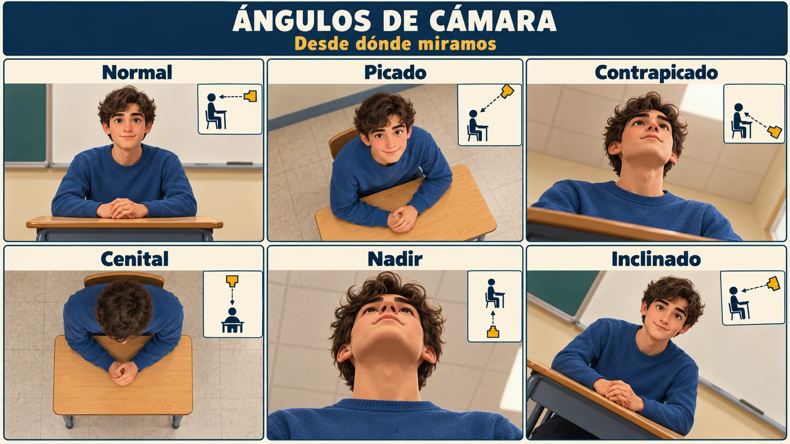

TÉCNICO PROFESIONAL: 2 SUR 1147 – FONOS (71) 2615416 · 2615410
BÁSICA y LICEO: 11 ORIENTE 1751 – FONOS (71) 2615454 · 2615457
www.salesianostalca.cl – cest@salesianostalca.cl · TALCA - REGIÓN DEL MAULE - CHILE
Lengua y Literatura · 3.º medio · Prof. Francisco Javier Núñez Valenzuela
Mi vida en cinco minutos · Clase 1
Nombre
RUT
Profesor
Francisco Javier Núñez Valenzuela
Curso
N° Lista
Asignatura
Lengua y Literatura
Guía N°
Revisado
Semestre
II
Fecha
Puntaje
Formativa
Objetivo
Analizar cómo las imágenes, la voz y la selección de escenas construyen un relato personal, fundamentando las observaciones con evidencias y eligiendo planos adecuados para una escena cotidiana.
Habilidades
Analizar, interpretar, fundamentar y aplicar planos.
INSTRUCCIONES
1. Lean y observen los ejemplos. 2. Analicen el vlog que proyectará el profesor y completen el organizador en su cuaderno. 3. Resuelvan en esta guía los ejercicios de planos y la aplicación final. Conserven ambos trabajos.
Una pregunta para toda la clase
¿Cómo contamos quiénes somos con lo que elegimos mostrar de nuestro día?
Antes de comenzar
Piensen en un momento de su jornada: llegar al colegio, preparar sus materiales o compartir un recreo.
1. ¿Qué podría conocer de ustedes una persona al ver ese momento?
2. ¿Bastaría mostrar una lista de actividades para comunicar esa idea? Expliquen.
Conceptos para comprender el vlog
Concepto
Qué nos permite analizar
Vlog
Relato audiovisual de una experiencia personal. Selecciona momentos y los comunica con imágenes y sonido.
Enunciador y audiencia
Quien comunica construye una voz y un rol; se dirige a personas con ciertos conocimientos e intereses.
Tema, mensaje y propósito
El tema es el asunto; el mensaje, la idea que se construye sobre él; el propósito, lo que se busca lograr en la audiencia.
Escuchen otras interpretaciones y fundaméntenlas con evidencias. Se analiza cómo se comunica una experiencia, sin juzgar la vida de las personas.
Leemos · Del relato a una secuencia de imágenes
Nombre y apellido:
Curso:
Antes de leer: ¿qué tendría que decidir una persona para transformar una experiencia en imágenes?
Para crear un relato con imágenes, primero se decide qué historia se contará. El libreto organiza los personajes, sus acciones, el lugar y el tiempo. También permite anticipar la estructura del relato y las palabras que acompañarán las imágenes.
El storyboard o guion visual es un borrador formado por viñetas. En cada una se indica qué acción se mostrará, dónde ocurrirá y qué plano se utilizará. La selección de gestos, posturas y detalles ayuda a representar las acciones y emociones. Por eso, una imagen puede aportar información que las palabras no entregan por sí solas.
El trabajo puede comenzar desde un guion para construir imágenes, o desde imágenes para elaborar un relato. Revisar esa relación permite decidir si la secuencia comunica lo que se quiere contar.
Ilustración didáctica creada con IA · escena ficticia.
Ubicar
Mostrar una acción
Destacar un detalle
El espacio ayuda a comprender dónde ocurre.
Las manos y los objetos permiten seguir lo que hace.
La cercanía dirige la atención hacia algo concreto.
En un vlog, estas decisiones se combinan con voz y sonido. Si el tema es el desayuno, el mensaje podría ser que el desayuno es un momento de pausa antes de salir. La voz y las imágenes deben permitir comprender esa idea.
Después de leer: ¿por qué un guion visual ayuda a comunicar una idea y no solo a reunir imágenes?
Aprendemos · Elegir cuánto mostrar
Nombre y apellido:
Curso:
El tamaño del plano indica cuánto del sujeto y de su entorno aparece dentro del encuadre. Su elección dirige nuestra atención: al lugar, a una acción, a una expresión o a un detalle.
Ilustración didáctica creada con IA · escena ficticia.
Plano
Qué muestra
Gran plano general
Un entorno muy amplio; las personas ocupan poco espacio.
General
La persona dentro del lugar; el entorno tiene importancia.
Entero
El cuerpo completo, de la cabeza a los pies.
Americano
La persona aproximadamente de la cabeza a las rodillas.
Medio
La persona aproximadamente de la cabeza a la cintura.
Primer plano
El rostro y los hombros.
Primerísimo primer plano
El rostro muy cercano o una parte de él.
Detalle
Una parte del cuerpo, un objeto o una acción pequeña.
Del nombre a la intención
Para situar la llegada al colegio, puede servir un plano general. Para mostrar una expresión, un primer plano. Para destacar una acción de las manos, un plano de detalle. La elección debe aportar al mensaje de la escena.
¿Qué información perderíamos si mostramos solo el rostro, sin ubicar antes el lugar?
Aprendemos · Elegir desde dónde mirar
Nombre y apellido:
Curso:
El ángulo indica la posición de la cámara respecto del sujeto. Puede combinarse con distintos tamaños de plano. Un primer plano, por ejemplo, puede grabarse con la cámara a la altura de los ojos o desde arriba.

Ilustración didáctica creada con IA · escena ficticia.
Ángulo
Posición de la cámara
Normal
A la altura de los ojos o del objeto.
Picado
Por encima del sujeto y dirigida hacia abajo.
Contrapicado
Por debajo del sujeto y dirigida hacia arriba.
Cenital
Directamente encima, mirando verticalmente hacia abajo.
Nadir
Directamente debajo, mirando verticalmente hacia arriba.
Inclinado
Con la cámara girada: el horizonte queda inclinado.
Los efectos dependen de la escena, la actuación y los demás recursos. Un picado no significa siempre debilidad ni un contrapicado siempre poder.
Quieren mostrar cómo ordenan sus materiales sobre una mesa. ¿Qué ángulo elegirían y qué permitiría ver?
Analizamos · Un creador cuenta su experiencia
Nombre y apellido:
Curso:
INSTRUCCIONES
Observen el vlog de Leo Bascuñán. Individualmente, copien y completen en su cuaderno las ocho filas. En cada una incluyan una observación y una escena, minuto o detalle que la respalde. La tabla de esta guía sirve de apoyo.
Video:Un día COMIENDO por $1.000 pesos en CHILE en pleno 2024! · Leo Bascuñán · 12:20. youtube.com/watch?v=h23SJatDO74 · El profesor lo proyectará.
Aspecto y pregunta guía
Mi observación
Escena, minuto o detalle
Enunciador ¿Quién habla y qué imagen de sí construye?
Audiencia ¿A quién parece dirigirse? ¿Qué pistas lo muestran?
Tema y mensaje ¿De qué trata y qué idea comunica?
Propósito ¿Qué busca provocar en quienes lo ven?
Formato y estructura ¿Cómo abre, conecta momentos y cierra?
Imagen y planos ¿Qué decide mostrar y qué aporta un encuadre?
Voz, sonido y edición ¿Qué aportan las palabras, los sonidos y los cortes?
Selección y responsabilidad ¿Qué parte de la experiencia se muestra y qué cuidados requiere?
Revisión en parejas: contrasten dos filas. Pregunten qué evidencia sostiene cada respuesta y corrijan lo necesario. La audiencia y el propósito pueden inferirse; no conocemos la intención privada del autor.
Ejercitamos · Reconocer, comparar y justificar
Nombre y apellido:
Curso:
INSTRUCCIONES
Observen las imágenes A, B y C. Respondan individualmente y luego contrasten una respuesta con un compañero. Usen la lámina de planos para comprobar su elección.
Ilustración didáctica creada con IA · escena ficticia.
1. Reconozcan los planos con una evidencia
Imagen
Plano
¿Qué parte del sujeto o del entorno lo demuestra?
A
B
C
2. Elijan según lo que quieren comunicar
a. Para ubicar al espectador en el lugar, ¿qué imagen elegirían? Expliquen qué permite comprender.
b. Para destacar la expresión del estudiante, ¿cuál elegirían? ¿Qué información deja fuera?
c. Si usan solo la imagen C, ¿qué necesitarían agregar para que se entienda el contexto?
Aplicamos · Una escena, tres decisiones
Nombre y apellido:
Curso:
INSTRUCCIONES
Elijan una situación cotidiana: llegar al colegio, preparar sus materiales, compartir un recreo o desayunar. Pueden imaginar la situación. Diseñen en papel una secuencia de tres imágenes; todavía no es la planificación del video completo.
Situación elegida:
¿Qué quiero que otra persona comprenda de esta experiencia?
1. Dibujen y decidan
Usen al menos dos tamaños de plano distintos. Bajo cada dibujo escriban el plano, el ángulo y lo que aporta al mensaje.
Imagen 1
Imagen 2
Imagen 3
Plano:Ángulo:
Plano:Ángulo:
Plano:Ángulo:
Aporta:
Aporta:
Aporta:
2. Revisen una decisión
En parejas, expliquen cómo la secuencia comunica su idea. Escuchen la sugerencia y señalen qué mantendrían o cambiarían.
3. Cerramos la pregunta de la clase
¿Cómo influye lo que mostramos y dejamos fuera en la manera en que otros comprenden nuestra experiencia? Respondan usando una decisión de su secuencia.